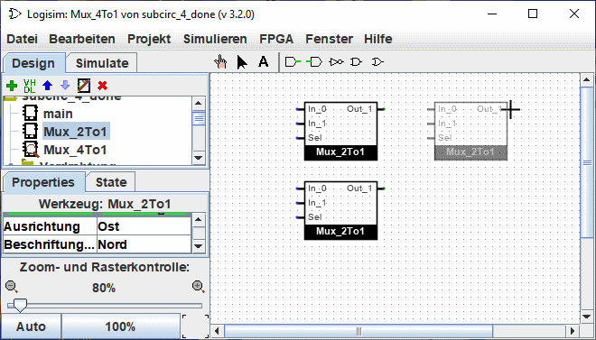
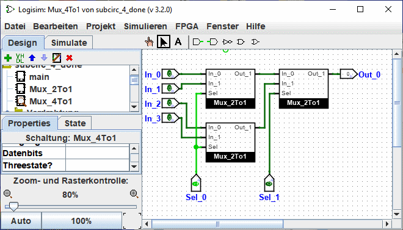
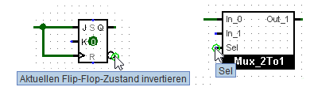

Verwendung von Teilschaltungen
Nun nehmen wir an, wir wollen einen 4-to-1 Multiplexer bauen, indem wir Instanzen unseres 2-to-1 Multiplexers verwenden. Natürlich würden wir zuerst eine neue Schaltung erstellen, die wir Mux_4to1 nennen. Um unserer Schaltung 2-to-1-Multiplexer hinzuzufügen, klicken wir einmal auf die Mux_2to1-Schaltung im Explorer-Fenster, um sie als Werkzeug auszuwählen, und dann können wir Kopien davon, dargestellt als Boxen, durch Klicken innerhalb der Leinwand hinzufügen.

Wenn Sie im Projektexplorer auf die Mux_2to1-Schaltung doppelklicken, dann zeigt die Seite die Ausgabe der Mux_2to1-Schaltung.
Nachdem die neue Schaltung entworfen wurde, kann sie so aussehen.

Unsere Schaltung für einen 4-zu-1-Multiplexer verwendet drei Kopien des 2-zu-1-Multiplexers, die jeweils in einer Box mit Pins auf der linken und rechten Seite gezeichnet sind. Die Pins dieser Box entsprechen den Ein- und Ausgangspins der Mux_2to1-Schaltung. Sie werden aus dem Schaltplan des Unter-Schaltungen von rechts nach links und von oben nach unten gelesen und von oben nach unten auf das Unter-Schaltungen gesetzt.
Sind diesen Pins im Diagramm Beschriftungen zugeordnet, so werden diese in das Symbol übernommen. Zusätzlich werden sie auch als Tooltip angezeigt, wenn Sie mit der Maus über den Pin fliegen. Sie können diese Funktion über das AttributTabelle deaktivieren.

Verschiedene andere Komponenten zeigen diese Tipps ebenfalls an. Bei einigen der Pins eines eingebauten Flipflop zum Beispiel erklärt das Schweben darüber, was dieser Pin macht.
Übrigens muss jeder Pin einer Schaltung entweder ein Eingang oder ein Ausgang sein. Viele gefertigte Chips haben Pins, die sich in manchen Situationen als Eingang und in anderen als Ausgang verhalten. solche Chips kann man in Logisim (zumindest in der aktuellen Version) nicht konstruieren.
Logisim wird verschiedene Zustandsinformationen für alle in einem Schaltkreis auftretenden Teilschaltungen pflegen. Wenn eine Schaltung beispielsweise ein Flip-Flop enthält und diese Schaltung mehrmals als Teilschaltung verwendet wird, dann hat das Flip-Flop jeder Instanz Teilschaltung einen eigenen Wert, wenn die größere Schaltung simuliert wird.
Jetzt, wo wir den 4-zu-1-Multiplexer definiert haben, können wir ihn nun auch in anderen Schaltkreisen einsetzen. Logisim hat keine Grenzen, wie Schaltungen Verschachtelungstiefe werden können - allerdings wird es sich gegen die Verschachtelung von Schaltungen in sich selbst wehren!
Hinweis: Es ist nichts falsch daran, eine Schaltung zu editieren, die als Subcircuit verwendet wird; dies ist sogar ziemlich üblich. Beachten Sie jedoch, dass jede Änderung an den Pins einer Schaltung (Hinzufügen, Löschen oder Verschieben) diese auch in der enthaltenden Schaltung neu anordnet. Wenn Sie also Pins in einer Schaltung ändern, müssen Sie auch alle Schaltungen bearbeiten, die diese Schaltung als Unter-Schaltkreis verwenden.
Nächste: Aussehen von Teilschaltungen bearbeiten .